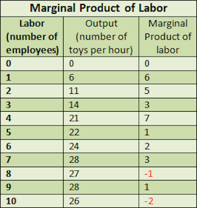
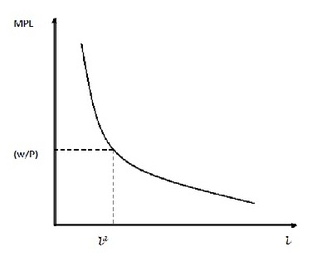
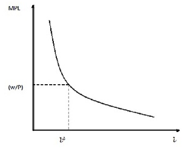
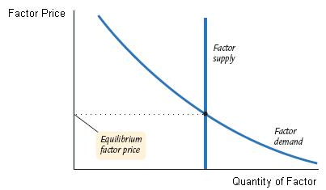
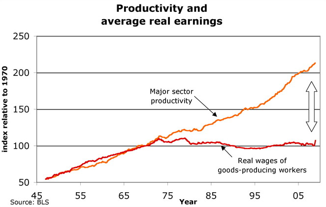
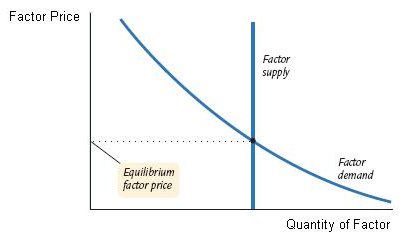
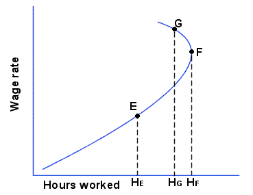
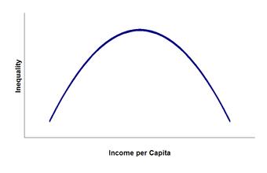
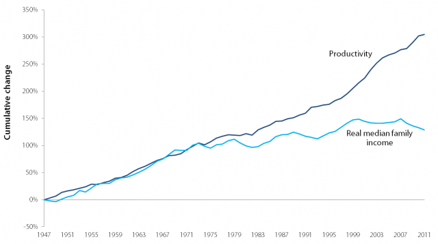
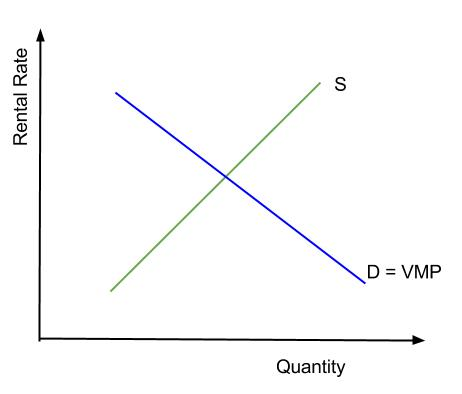

Table of Contents
14. Inputs to Production: Labor, Natural Resources, and Technology
14.1. Demand for Labor
14.1.1. Marginal Product of Labor (Physical)
14.1.2. Marginal Product of Labor (Revenue)
14.1.3. Deriving the Labor Demand Curve
14.2. Labor Market Equilibrium and Wage Determinants
14.2.1. Conditions of Equilibrium
14.2.2. The Wage Rate
14.2.3. Compensation Differentials
14.2.4. Performance and Pay
14.2.5. Marginal Revenue Productivity and Wages
14.2.6. Changes in Equilibrium for Shifts in Market Supply and Market Demand
14.2.7. Labor Union Impacts on Equilibrium
14.3. Income Distribution
14.3.1. How Income is Allocated
14.3.2. Current Topics in Income Distribution
14.4. Capital and Natural Resource Markets
14.4.1. Other Factors of Production
14.4.2. The Importance of Factor Prices
14.4.3. Marginal Productivity and Resource Demand
14.4.4. Marginal Productivity and Income Distribution
14.4.5. Capital Market
14.4.6. Natural Resource Market
14.5. Capital, Productivity, and Technology
14.5.1. Capital and Technology
14.5.2. Total Factor Productivity
14.5.3. Changes in Technology Over Time
14. Inputs to Production: Labor, Natural Resources, and Technology
14.1. Demand for Labor
14.1.1. Marginal Product of Labor (Physical)
The marginal product of labor is the change in output that results from employing an added unit of labor.
Learning Objective
Define the marginal product of labor
Key Points
- The marginal product of labor is not always equivalent to the output directly produced by that added unit of labor.
- When production is discrete, we can define the marginal product of labor (MPL) as ΔY/ΔL.
- When production is continuous, the MPL is the first derivative of the production function in terms of L.
- Graphically, the MPL is the slope of the production function.
- The law of diminishing marginal returns ensures that in most industries, the MPL will eventually be decreasing.
Key Terms
- returns to scale
- A term referring to changes in output resulting from a proportional change in all inputs (where all inputs increase by a constant factor).
- marginal product
- The extra output that can be produced by using one more unit of the input.
In economics, the marginal product of labor (MPL) is the change in output that results from employing an added unit of labor. This is not always equivalent to the output directly produced by that added unit of labor; for example, employing an additional cook at a restaurant may make the other cooks more efficient by allowing more specialization of tasks, creating a marginal product that is greater than that produced directly by the new employee. Conversely, hiring an additional worker onto an already crowded factory floor may make the other employees less productive, leading to a marginal product that is lower than the work done by the additional employee.
When production is discrete, we can define the marginal product of labor as ΔY/ΔL where Y is output. If a factory that is initially producing 100 widgets hires another employee and is then able to produce 106 widgets, the MPL is simply six. When production is continuous, the MPL is the first derivative of the production function in terms of L. Graphically, the MPL is the slope of the production function.
gives another example of marginal product of labor. The second column shows total production with different quantities of labor, while the third column shows the increase (or decrease) as labor is added to the production process.
{kind=link}
This table shows hypothetical returns and marginal product of labor. Note that in reality this firm would never hire more than seven employees, since a negative marginal product is bad for the firm regardless of the wage rate.
The law of diminishing marginal returns ensures that in most industries, the MPL will eventually be decreasing. The law states that "as units of one input are added (with all other inputs held constant) a point will be reached where the resulting additions to output will begin to decrease; that is marginal product will decline. " The law of diminishing marginal returns applies regardless of whether the production function exhibits increasing, decreasing or constant returns to scale. The key factor is that the variable input is being changed while all other factors of production are being held constant. Under such circumstances diminishing marginal returns are inevitable at some level of production.
14.1.2. Marginal Product of Labor (Revenue)
The marginal revenue product of labor is the change in revenue that results from employing an additional unit of labor.
Learning Objective
Define the marginal product of labor under the marginal revenue productivity theory of wages
Key Points
- The marginal revenue product of a worker is equal to the product of the marginal product of labor (MP:) and the marginal revenue (MR) of output.
- The marginal revenue productivity theory states that a profit maximizing firm will hire workers up to the point where the marginal revenue product is equal to the wage rate.
- The change in output from hiring one more employee is not limited to that directly attributable to the additional worker.
Key Terms
- diminishing marginal returns
- The decrease in the per-unit output of a production process as the amount of a single factor of production is increased.
- marginal product
- The extra output that can be produced by using one more unit of the input.
The marginal revenue product of labor (MRPL) is the change in revenue that results from employing an additional unit of labor, holding all other inputs constant. The marginal revenue product of a worker is equal to the product of the marginal product of labor (MPL) and the marginal revenue (MR) of output, given by MR×MP: = MRPL. This can be used to determine the optimal number of workers to employ at an exogenously determined market wage rate. Theory states that a profit maximizing firm will hire workers up to the point where the marginal revenue product is equal to the wage rate, because it is not efficient for a firm to pay its workers more than it will earn in revenues from their labor.
For example, if a firm can sell t-shirts for \$10 each and the wage rate is \$20/hour, the firm will continue to hire workers until the marginal product of an additional hour of work is two t-shirts. If the MPL is three t-shirts the first will hire more workers until the MPL reaches two; if the MPL is one t-shirt then the firm will remove workers until the MPL reaches two.
Let TR=Total Revenue; L=Labor; Q=Quantity. Mathematically:
- MRPL= ∆TR/∆L
- MR = ∆TR/∆Q
- MPL = ∆Q/∆L
- MR x MPL = (∆TR/∆Q) x (∆Q/∆L) = ∆TR/∆L
Note that the change in output is not limited to that directly attributable to the additional worker. Assuming that the firm is operating with diminishing marginal returns then the addition of an extra worker reduces the average productivity of every other worker (and every other worker affects the marginal productivity of the additional worker) - in other words, everybody is getting in each other's way.
Because the MRPL is equal to the marginal product of labor times the price of output, any variable that affects either MPL or price will affect the MRPL. For example, changes in technology or the quantity of other inputs will change the marginal product of labor, and changes in the product demand or changes in the price of complements or substitutes will affect the price of output. These will all cause shifts in the MRPL.
14.1.3. Deriving the Labor Demand Curve
Firms will demand labor until the marginal revenue product of labor is equal to the wage rate.
Learning Objective
Explain how a company uses marginal revenue product in hiring decisions
Key Points
- The marginal revenue product of labor (MRPL) is the additional amount of revenue a firm can generate by hiring one additional employee. It is found by multiplying the marginal product of labor by the price of output.
- Firms will demand labor until the MRPL equals the wage rate.
- The demand curve for labor can be shifted by shifted by changes in the productivity of labor, the relative price of labor, or the price of the output.
- It will also change as a result of a change in technology, a change in the price of the good being produced, or a change in the number of firms hiring the labor.
Key Terms
- marginal revenue product
- The change in total revenue earned by a firm that results from employing one more unit of labor.
- factor of production
- A resource employed to produce goods and services, such as labor, land, and capital.
Firms demand labor and an input to production. The cost of labor to a firm is called the wage rate. This can be thought of as the firm's marginal cost. The additional revenue generated by hiring one more unit of labor is the marginal revenue product of labor (MRPL). This can be thought of as the marginal benefit.
The marginal revenue product of labor (MRPL) is the additional amount of revenue a firm can generate by hiring one additional employee. It is found by multiplying the marginal product of labor (MPL) - the amount of additional output one additional worker can generate - by the price of output. If an employee of a customer support call center can take eight calls an hour (the MPL) and each call earns the company \$3, then the MRPL is \$24.
We can use the MRPL curve to determine the quantity of labor a company will hire. Suppose workers are available at an hourly rate of \$10. The amount a factor adds to a firm's total cost per period is the marginal cost of that factor, so in this case the marginal cost of labor is \$10. Firms maximize profit when marginal costs equal marginal revenues, and in the labor market this means that firms will hire more employees until the wage rate (marginal cost of labor) equals the MRPL. At a price of \$10, the company will hire workers until the last worker hired gives a marginal revenue product of \$10 .
{kind=link}
The MPL falls as the amount of labor employed increases. The optimum demand for labor falls where the real wage rate (w/P) is equal to the MPL.
Thus, the downward-sloping portion of the marginal revenue product curve shows the number of employees a company will hire at each price (wage), so we can interpret this part of the curve as the firm's demand for labor. As with other demand curves, the market demand curve for labor is the sum of all firm's individual demand curves.
Shifting the Demand for Labor
There are three main reasons why the demand curve for labor may shift:
- Changes to the marginal productivity of labor: Technology, for instance, may increase the marginal productivity of labor, shifting the demand curve to the right. For example, computer technology has increased the productivity (marginal product) of many types of workers. This has led to an increase in the marginal revenue product of labor for these jobs, shifting firms' demand for labor to the right. This both increases the number of employed workers and increases the wage rate.
- The prices of other factors of production: The change in the relative price of labor will increase or decrease demand for labor. For example, is capital becomes more expensive relative to labor, the demand for labor will increase as firms seek to substitute labor for capital.
- The price of the firm's output: Since the price of the output is a component of MRPL, changes will shift the demand curve for labor. If the price that a firm can charge for its output increases, for example, the MRPL will increase. This is reflected in an outward shift of the demand for labor.
14.2. Labor Market Equilibrium and Wage Determinants
14.2.1. Conditions of Equilibrium
Equilibrium in the labor market requires that the marginal revenue product of labor is equal to the wage rate, and that MPL/PL=MPK/PK.
Learning Objective
Employ the marginal decision rule to determine the equilibrium cost of labor
Key Points
- Firms will hire more labor when the marginal revenue product of labor is greater than the wage rate, and stop hiring as soon as the two values are equal.
- The point at which the MRPL equals the prevailing wage rate is the labor market equilibrium.
- The marginal decision rule says that a firm will shift spending among factors of production as long as the marginal benefit of such a shift exceeds the marginal cost.
- If the marginal benefit of additional labor, MPL/PL, exceeds the marginal cost, MPK/PK, then the firm will be better off by spending more on labor and less on capital.
- According to the marginal decision rule, equilibrium in the labor market must occur where MPL/PL=MPK/PK.
Key Terms
- capital
- Already-produced durable goods available for use as a factor of production, such as steam shovels (equipment) and office buildings (structures).
- marginal revenue product
- The change in total revenue earned by a firm that results from employing one more unit of labor.
- marginal product
- The extra output that can be produced by using one more unit of the input.
The labor market differs somewhat from the market for goods and services because labor demand is a derived demand; labor is not desired for its own sake but rather because it aids in producing output. Firms determine their demand for labor through a lens of profit maximization, ultimately seeking to produce the optimum level of output and the lowest possible cost.
Labor Market Equilibrium
In order to find the equilibrium quantity and price of labor, economists generally make several assumptions:
- The marginal product of labor (MPL) is decreasing;
- Firms are price-takers in the goods market (cannot affect the price of output) as well as in the labor market (cannot affect the wage rate);
- The supply of labor is elastic and increases with the wage rate (upward sloping supply); and
- Firms are profit-maximizers.
The marginal revenue product of labor (MRPL) is equal to the MPL multiplied by the price of output. The MRPL represents the additional revenue that a firm can expect to gain from employing one additional unit of labor - it is the marginal benefit to the firm from labor. Under the above assumptions, the MRPL is decreasing as the quantity of labor increases, and firms can increase profit by hiring more labor if the MRPL is greater than the marginal cost of that additional unit of labor - the wage rate. Thus, firms will hire more labor when the MRPL is greater than the wage rate, and stop hiring as soon as the two values are equal. The point at which the MRPL equals the prevailing wage rate is the labor market equilibrium.
{kind=link}
The optimal demand for labor is located where the marginal product equals the real wage rate. The curved line represents the falling marginal product of labor, the y-axis is the marginal product/wage rate, and the x-axis is the quantity of labor.
Optimizing Capital and Labor
In the long run, firms maximize profit by choosing the optimal combination of labor and capital to produce a given amount of output. It's possible that an automobile company could manufacture 1,000 cars using only expensive, technologically advanced robots and machinery (capital) that do not require any human participation. It's also possible that the company could produce the same number of vehicles using only employee work (labor), without any assistance from machines or technology. For most industries, however, relying solely on capital or solely on labor is more expensive than using some combination of the two .
Most firms need a combination of both labor and capital in order to produce their product.
Firms use the marginal decision rule in order to decide what combination of labor, capital, and other factors of production to use in the creation of output. The marginal decision rule says that a firm will shift spending among factors of production as long as the marginal benefit of such a shift exceeds the marginal cost. Imagine that a firm must decide whether to spend an additional dollar on labor. To determine the marginal benefit of that dollar, we divide the marginal product of labor (MP_L) by it's price (the wage rate, P_L): MP_L/P_L. If capital and labor are the only factors of production, then spending an additional \$1 on labor while holding the total cost constant means taking \$1 out of capital. The cost of that action will be the output lost from cutting back on capital, which is the ratio of the marginal product of capital (MP_K) to the price of capital (the rental rate, P_K). Thus, the cost of cutting back on capital is MP_K/P_K.
If the marginal benefit of additional labor, MP_L/P_L, exceeds the marginal cost, MP_K/PK, then the firm will be better off by spending more on labor and less on capital. On the other hand, if MP_K/P_K is greater than MP_L/P_L, the firm will be better off spending more on capital and less on labor. The equilibrium - the point at which the firm is producing the maximum amount of output at a given cost - occurs where MP_L/P_L=MP_K/P_K.
14.2.2. The Wage Rate
The wage rate is determined by the intersection of supply of and demand for labor.
Learning Objective
Describe the factors that determine the wage rate
Key Points
- An increase in demand or a reduction in supply will raise wages; an increase in supply or a reduction in demand will lower them.
- The demand curve depends on the marginal product of labor and the price of the good labor produces. If the demand curve shifts to the right, either because productivity or the price of output has increased, wages will be pushed up.
- In the long run the supply of labor is simply a function of the population size, but in the short run it depends on variables such as worker preferences, the skills and training a job requires, and wages available in alternative occupations.
Key Terms
- Union
- an organization of workers who have banded together to achieve common goals
- marginal product
- The extra output that can be produced by using one more unit of the input.
When labor is an input to production, firms hire workers. Firms are demand labor and workers provide it at a price called the wage rate. Colloquially, "wages" refer to just the dollar amount paid to a worker, but in economics, it refers to total compensation (i.e. it includes benefits).
The marginal benefit of hiring an additional unit of labor is called the marginal product of labor: it is the additional revenue generated from the last unit of labor. In theory, as with other inputs to production, firms will hire workers until the wage rate (marginal cost) equals the marginal revenue product of labor (marginal benefit).
Changes in Supply and Demand
In competitive markets, the demand curve for labor is the same as the marginal revenue curve. Thus, shifts in the demand for labor are a function of changes in the marginal product of labor. This can occur for a number of reasons. First of all, you can imagine that a new product or company is created that represents new demand for labor of a certain type. There are also three main factors that would shift the labor demand curve:
- Technology which affects the output of a unit of labor.
- Changes in the price of the output which affect the value of the unit of labor.
- Changes in the price of labor relative to other factors of production.
In the long run, the supply of labor is a function of the population. A decrease in the supply of labor will typically cause an increase in the wage rate. The fact that a reduction in supply tends to strengthen wages explains why unions and other professional associations have often sought to limit the number of workers in their particular industry. Physicians, for example, have a financial incentive to enforce rigorous training, licensing, and certification requirements in order to limit the number of practitioners and keep the labor supply low .
{kind=link}
In the long run the supply of labor is fixed and demand is downward-sloping. The wage rate is determined by their intersection.
14.2.3. Compensation Differentials
Some differences in wage rates across places, occupations, and demographic groups can be explained by compensation differentials.
Learning Objective
Describe nonmonetary factors that affect wage rates
Key Points
- Although basic economic theory suggests that there ought to be one prevailing wage rate for all labor, this is not the case.
- Wage differences are called compensation differentials and can be explained by many factors, such as differences in the skills of the workers, the country or geographical area in which jobs are performed, or the characteristics of the jobs themselves.
- One common source of differences in wage rates is human capital. More skilled and educated workers tend to have higher wages because their marginal product of labor tends to be higher.
- If a certain area is a desirable place to live, the supply of labor will be higher than in other areas and wages will be lower. This is a type of geographical differential.
- Discrimination against gender or racial groups can cause compensation differentials.
- A compensating differential is the additional amount of income that a given worker must be offered in order to motivate them to accept a given undesirable job, relative to other jobs that worker could perform.
Key Terms
- discrimination
- Distinct treatment of an individual or group to their disadvantage; treatment or consideration based on class or category rather than individual merit; partiality; prejudice; bigotry.
- differential
- a qualitative or quantitative difference between similar or comparable things
According to the basic theory of the labor market, there ought to be one equilibrium wage rate that applies to all workers across industries and countries. Of course this is not the case; doctors typically make more per hour than retail clerks, and workers in the United States typically earn a higher wage than workers in India. These wage differences are called compensation differentials and can be explained by many factors, such as differences in the skills of the workers, the country or geographical area in which jobs are performed, or the characteristics of the jobs themselves.
Education Differentials
One common source of differences in wage rates is human capital. More skilled and educated workers tend to have higher wages because their marginal product of labor tends to be higher . Additionally, the differential pay for more education tends to compensate workers for the time, effort, and foregone wages from obtaining the necessary training. If all jobs paid the same rate, for example, fewer people would go through the expense and effort of law school. The compensation differential ensures that individuals are willing to invest in their own human capital.
Workers seek increased compensation by attaining higher levels of education
Geographic Compensation Differentials
If a certain part of a country is a particularly attractive area to live in and if labor mobility is perfect, then more and more workers will move to that area, which in turn will increase the supply of labor and depress wages. If the attractiveness of that area compared to other areas does not change, the wage rate will be set at such a rate that workers will be indifferent between living in areas that are more attractive but with a lower wage and living in areas which are more attractive with a higher wage. In this way, a sustained equilibrium with different wage rates across different areas can occur.
Discrimination and Compensation Differentials
In the United States, minorities and women make lower wages on average than Caucasian men. Some of this is due to historical trends affecting these groups that result in less human capital or a concentration in certain lower-paying occupations. Another source of differing wage rates, however, is discrimination. Several studies have shown that, in the United States, several minority groups (including black men and women, Hispanic men and women, and white women) suffer from decreased wage earning for the same job with the same performance levels and responsibilities as white males.
Compensating Differential
Not to be confused with a compensation differential, a compensating differential is a term used in labor economics to analyze the relation between the wage rate and the unpleasantness, risk, or other undesirable attributes of a particular job. It is defined as the additional amount of income that a given worker must be offered in order to motivate them to accept a given undesirable job, relative to other jobs that worker could perform. One can also speak of the compensating differential for an especially desirable job, or one that provides special benefits, but in this case the differential would be negative: that is, a given worker would be willing to accept a lower wage for an especially desirable job, relative to other jobs. .
Hazard pay is a type of compensating differential. Occupations that are dangerous, such as police work, will typically have higher pay to compensate for the risk associated with that job.
14.2.4. Performance and Pay
Theoretically there is a direct connection between job performance and pay, but in reality other factors often distort this relationship.
Learning Objective
Identify the relationship between performance and wages
Key Points
- According to economic theory, workers' wages are equal to the marginal revenue product of their labor. If one employee is very productive he or she will have a high marginal revenue product.
- In reality, wages are determined not only by one's productivity, but also by seniority, networking, ambition, and luck.
- Some of the disconnect between performance and pay can be addressed with alternate pay schemes.
Key Terms
- commission
- A fee charged by an agent or broker for carrying out a transaction
- piece work
- Work that a worker is paid for according to the number of units produced, rather than the number of hours worked.
According to economic theory, workers' wages are equal to the marginal revenue product of their labor. If one employee is very productive he or she will have a high marginal revenue product: one additional hour of their work will produce a significant increase in output. It follows that more productive employees should have higher wages than less productive employees. Imagine if this were not true: a firm decides to pay a highly productive worker less than the marginal revenue product of his labor. Any other firm could make a profit by offering a higher salary to attract the productive employee to their company, and the worker's wage would rise. Theoretically, therefore, there is a direct relationship between job performance and pay.
We know that this is not always the case in reality. Wages are determined not only by one's productivity, but also by seniority, networking, ambition, and luck. It is very rare for an entry-level worker to make the same wage as an experienced member of the same profession regardless of their relative levels of productivity because the older worker has had time to receive pay raises and promotions for which the younger employee is simply not eligible. Discrimination is sometimes responsible for members of minority racial or gender groups receiving wages that are less than wages for the majority group even when productivity levels are the same. Finally, outside forces, such as unions or government regulations, can distort pay rates .
{kind=link}
On a macroeconomic level, this graph shows the disconnect, beginning around 1975, between the productivity of labor and the wage rate in the U.S. If the economic theory were correct in the real world, wages and productivity would increase together.
Linking Performance and Pay
Some of the disconnect between performance and pay can be addressed with alternate pay schemes. While a salary or hourly pay does not directly take into account the quality of work, performance-related pay compensates workers with higher levels of productivity directly. One example is commission-based pay. In this type of pay scheme, workers receive some percentage of the profit that they generate for their company. This may be paid on top of a baseline salary or may be the only form of compensation. This type of system is very common among car salespeople and insurance brokers.
Another alternative is piece-work, in which employees are paid a fixed rate for every unit produced or action performed, regardless of the time it takes. This is common in settings where it is easy to measure the output of piece work, such as when a garment worker is paid per each piece of cloth sewn or a telemarketer is paid for every call placed.
14.2.5. Marginal Revenue Productivity and Wages
In a perfectly competitive market, the wage rate is equal to the marginal revenue product of labor.
Learning Objective
Explain how wages are determines by marginal revenue productivity
Key Points
- In the long run the supply of labor is a simple function of the size of the population, so in order to understand changes in wage rates we focus on the demand for labor.
- The marginal product of labor (MPL) is the increase in output that a firm experiences from adding one additional unit of labor.
- The marginal benefit to the firm of hiring an additional unit of labor is called the marginal revenue product of labor (MRPL). It is calculated by multiplying MPL by the price of the output.
- The MRPL represents the firm's demand curve for labor, which means that the firm will continue to hire more labor until the MRPL is equal to the wage rate.
Key Terms
- marginal benefit
- The extra benefit received from a small increase in the consumption of a good or service. It is calculated as the increase in total benefit divided by the increase in consumption.
- marginal revenue product
- The change in total revenue earned by a firm that results from employing one more unit of labor.
Just as in any market, the price of labor, the wage rate, is determined by the intersection of supply and demand. When the supply of labor increases the equilibrium price falls, and when the demand for labor increases the equilibrium price rises. In the long run the supply of labor is a simple function of the size of the population, so in order to understand changes in wage rates we focus on the demand for labor.
To determine demand in the labor market we must find the marginal revenue product of labor (MRPL), which is based on the marginal productivity of labor (MPL) and the price of output. Conceptually, the MRPL represents the additional revenue that the firm can generate by adding one additional unit of labor (recall that MPL is the additional output from the additional unit of labor). Thus, MRPL is simply the product of MPL and the price of the output.
The MPL is generally decreasing: adding a 100th unit of labor will not increase output as much as adding a 99th. Since competitive industries are price takers and cannot change the price of output by changing their level of production, the MRPL curve will have the same downward slope as the MPL curve.
From the perspective of the firm, the MRPL is the marginal benefit to the firm of hiring an additional unit of labor. We know that a profit-maximizing firm will increase its factors of production until their marginal benefit is equal to the marginal cost. Therefore, firms will continue to add labor (hire workers) until the MRPL equals the wage rate. Thus, workers earn a wage equal to the marginal revenue product of their labor. For example, in a perfectly competitive market, an employee who earns \$20/hour has a marginal productivity that is worth exactly \$20 .
{kind=link}
The graph shows that a factor of production - in our case, labor - has a fixed supply in the long run, so the wage rate is determined by the factor demand curve - in our case, the marginal revenue product of labor. The intersection of vertical supply and the downward sloping demand gives the wage rate.
14.2.6. Changes in Equilibrium for Shifts in Market Supply and Market Demand
A shift in the supply or demand of labor will cause a change in the market equilibrium.
Learning Objective
Discuss the factors that influence the shape and position of the labor supply curve
Key Points
- The opportunity cost of leisure is the wages lost while not working; as wages rise, the cost of leisure increases.
- The substitution effect means that when wages rise, people are likely to substitute more labor for less leisure.
- However, the income effect means that as people become wealthier, their demand for normal goods such as leisure increases.
- Typically the substitution effect dominates the supply of labor at normal wage rates, but the income effect may come to dominate at higher wage rates. This creates a backward bending labor supply curve.
- The supply curve for labor will shift in response to changes in preferences, changes in income, changes in population, and changes in expectations.
- The demand curve for labor will shift in response to changes in human capital, changes in technology, changes in the price of complements or substitutes for output, and changes in consumer preferences.
Key Terms
- Opportunity cost
- The cost of any activity measured in terms of the value of the next best alternative forgone (that is not chosen).
- normal good
- A good for which demand increases when income increases and falls when income decreases but price remains constant.
As in all competitive markets, the equilibrium price and quantity of labor is determined by supply and demand.
Labor Supply
Labour supply curves are derived from the 'labor-leisure' trade-off. More hours worked earn higher incomes but necessitate a cut in the amount of other things workers enjoy such as going to movies, hanging out with friends, or sleeping. The opportunity cost of working is leisure time and vis versa. Considering this tradeoff, workers collectively offer a set of labor to the market which economists call the supply of labor.
To see how changes in wages affect the supply of labor, suppose wages rise. This increases the cost of leisure and causes the supply of labor to rise - this is the substitution effect , which states that as the relative price of one good increases, consumption of that good will decrease. However, there is also an income effect - an increased wage means higher income, and since leisure is a normal good, the quantity of leisure demanded will go up. In general, at low wage levels the substitution effect dominates the income effect and higher wages cause an increase in the supply of labor. At high incomes, however, the negative income effect could offset the positive substitution effect and higher wage levels could actually cause labor to decrease. A worker making \$800/hour who receives a raise to \$1200/hour may not have much use for the extra money and may choose to work less while maintaining the same standard of living, for example. This creates a supply curve that bends backwards, initially increasing with the wage rate but later decreasing.
{kind=link}
While normally hours of labor supplied will increase with the wage rate, the income effect may produce the opposite effect at high wage levels.
People supply labor in order to increase their utility—just as they demand goods and services in order to increase their utility. The supply curve for labor will shift in response to changes in the same factors that shift demand for goods and services. These include changes in preferences, changes in income, changes in population, and changes in expectations. A change in preferences that causes people to prefer more leisure, for example, will shift the supply curve to the left, creating a lower level of employment and a higher wage rate.
Labor Demand
An increase in the demand for labor will increase both the level of employment and the wage rate. We have already seen that the demand for labor is based on the marginal product of labor and the price of output. Thus, any factor that affects productivity or output prices will also shift labor demand. Some of these factors include:
- Available technology (marginal productivity of labor)
- The skills or education of the workforce (marginal productivity of labor)
- Level of physical capital (marginal productivity of labor)
- Price of physical capital (price of output)
- Price of substitute or complement goods (price of output)
- Consumer preferences (price of output)
All of the above may cause the demand for labor to shift and change the equilibrium quantity and price of labor.
14.2.7. Labor Union Impacts on Equilibrium
Unions are organizations of workers that seek to improve working conditions and raise the equilibrium wage rate.
Learning Objective
Examine the role of unions and collective bargaining in labor-firm relations
Key Points
- Unions' primary work involves negotiating wages, work rules, complaint procedures, promotions, benefits, workplace safety and policies with company management.
- If the labor market is a competitive one in which wages are determined by demand and supply, increasing the wage requires either increasing the demand for labor or reducing the supply.
- Increasing demand for labor requires increasing the marginal product of labor or raising the price of the good produced by labor.
- Increasing demand for labor requires increasing the marginal product of labor or raising the price of the good produced by labor.
- Unions can restrict the supply of labor in two ways: slowing the growth of the labor force and promoting policies that make it difficult for workers to enter a particular craft.
Key Terms
- collective bargaining
- A method of negotiation in which employees negotiate as a group with their employers.
- strike
- A work stoppage (or otherwise concerted stoppage of an activity) as a form of protest.
- minimum wage
- The lowest rate at which an employer can legally pay an employee; usually expressed as pay per hour.
A labor union is an organization of workers who have banded together to achieve common goals. The primary activity of the union is to bargain with the employer on behalf of union members and negotiate labor contracts. The most common purpose of associations or unions is maintaining or improving the conditions of employment, which may include the negotiation of wages, work rules, complaint procedures, promotions, benefits, workplace safety, and policies.
In order to achieve these goals unions engage in collective bargaining: the process of negotiation between a company's management and a labor union. When collective bargaining fails, union members may go on strike, refusing to work until a firm addresses the workers' grievances.
Union Impacts on Equilibrium
Fundamentally, unions seek higher wages for its member workers (though, here "wages" encompases all types of compensation, not just cash paid to the workers by the employer).
The effect of unions on the labor market equilibrium can be analyzed like any other price increase. If employers (those who demand labor) have an inelastic demand for labor, the increase in wages (the price of labor) will not translate into a drop in employment (quantity of labor supplied). If, however, their demand is elastic, employers will simply respond to union demands for higher wages by hiring fewer workers.
However, the reality of unions is more complex. As an organized body, unions are also active in the political realm. They can lobby for legislation that will affect the market not only for labor, but also for the goods they produce. For example, unions may advocate for trade restrictions to protect the markets in which they work from foreign competition. By preventing domestic firms from having to compete with unrestricted foreign firms, they can ensure that consumers do not have lower cost alternatives which would drive employers who pay a higher union wage out of business.
One tool that unions may use to raise wages is to go on strike.
14.3. Income Distribution
14.3.1. How Income is Allocated
Recent growth in overall income inequality has been driven mostly by increasing inequality in wages and salaries.
Learning Objective
Discuss factors that contribute to income inequality
Key Points
- There is a potential role for government to correct the market failures that have propelled the rise in income inequality.
- Common factors thought to impact domestic economic inequality include labor market outcomes, globalization, technological changes, policy reforms, more regressive taxation, and discrimination.
- Some government tools for affecting income distribution are policies, hiring regulations, and progressive taxation.
Key Terms
- regressive
- Whose rate decreases as the amount increases.
- progressive
- Gradually advancing in extent; increasing.
- globalization
- The process of international integration arising from the interchange of world views, products, ideas, and other aspects of culture.
Recent growth in overall income inequality has been driven mostly by increasing inequality in wages and salaries. Globalization has contributed to some portion of rising inequality as jobs have moved to lower wage geographies, placing downward pressure on wages of higher cost of living countries. However, economists view the impact of technological progress to outweigh the effect of globalization, as technology has effectively been substituted for more expensive wage labor. Policy reforms and regressive taxation have promoted disparity but are relatively minor contributors to existing inequality. Discrimination and favoritism in the workplace has continued to limit advancement of minority groups and women, but evidence reveals that wage related impacts to marginalized groups diminish with the increase in educational attainment.
Common factors thought to impact domestic economic inequality include:
- Labor market outcomes
- Globalization
- Technological changes
- Policy reforms
- More regressive taxation
- Discrimination
Globally, income inequality has increased over the last few decades. In the U.S., recent studies have stated that the wealthiest 400 Americans control nearly 50% of domestic wealth. Given that economic theory points to a decline in income inequality over time, the recent increase has led many researchers to conclude that we may be starting a new inequality cycle .
{kind=link}
The Kuznets curve depicts the relationship between inequality and income; after hitting a market peak, inequality will decrease as income increases. Recent economic trends have caused researchers to believe that the economy may have started on a new Kuznet's curve given the heightening economic inequality.
Role of Government
The market for labor is not completely transparent, competition is imperfect, information unevenly distributed, opportunities to acquire education and skills unequal, and since many such imperfect conditions exist in virtually every market, there is in fact little presumption that markets are in general efficient. This means that there is an enormous potential role for government to correct these market failures.
Governments have a number of tools with which they can affect income distribution. One way in which governments attempt to decrease income inequality is through progressive taxation. Wealthier people pay proportionally more of their income in taxes, which are then used to pay for services for the poor. Government can also place regulations of hiring and firing practices to address issues such as discrimination.
14.3.2. Current Topics in Income Distribution
Income inequality in the United States has grown significantly since the early 1970s.
Learning Objective
Describe trends in income inequality in the U.S.
Key Points
- While inequality has risen among most developed countries, and especially English-speaking ones, it is highest in the United States.
- The fruits of overall growth have accrued disproportionately to the top 1%.
- According to PolitiFact and others, 400 Americans now own more than 50% of the net wealth of the United States.
Key Term
- inequality
- An unfair, not equal, state.
While income inequality has risen among most developed countries, and especially English-speaking ones, it is highest in the United States. Income inequality in the United States has grown significantly since the early 1970s and has been the subject of study of many scholars and institutions.
Most of the income growth has been between the middle class and top earners, with the disparity becoming more extreme the further one goes up in the income distribution. A 2011 study by the Congressional Budget Office (CBO) found that the top earning 1% of households increased their income by about 275% after federal taxes and income transfers over a period between 1979 and 2007, compared to a gain of just under 40% for the 60% in the middle of America's income distribution. Scholars and others differ as to the causes, solutions, and the significance of the trend, which in 2011 helped ignite the "Occupy" protest movement. As a result, inequality has been described both as irrelevant in the face of economic opportunity (or social mobility) in America, and as a cause of the decline in that opportunity.
Yale professor and economist Robert J. Shiller, who was among three Americans who won the Nobel prize for economics in 2013, believes that rising economic inequality in the United States and other countries is "the most important problem that we are facing now today. "
Brief History of Income Disparity in America
The first era of inequality lasted roughly from the post-civil war era ("the Gilded Age") to sometime around 1937. But from about 1937 to 1947, a period that has been dubbed the "Great Compression," income inequality in America fell dramatically. Highly progressive New Deal taxation, the strengthening of unions, and regulation of the National War Labor Board during World War II raised the income of the poor and working class and lowered that of top earners. This "middle class society" characterized by a relatively low level of inequality remained fairly steady for about three decades ending in early 1970s. The return to high inequality or what has been referred as the "Great Divergence," began in the 1970s. It was caused mainly due to the widening gap between middle and top earners.
Recent History: Inequality on the Rise
The income growth of the average American family closely matched that of economic productivity until some time in the 1970s. However, while income began to stagnate, productivity continued to climb .
{kind=link}
Though productivity gains were primarily the basis for the increase in U.S. income, in more recent times, productivity increases have not been captured in income increases for the majority of U.S. families as noted in the graph.
In 2013, the Economic Policy Institute noted that even though corporate profits are at historic highs, the wage and benefit growth of the vast majority has stagnated. The fruits of overall growth have accrued disproportionately to the top 1%. According to PolitiFact and others, 400 Americans now own more than 50% of the net wealth of the United States.
14.4. Capital and Natural Resource Markets
14.4.1. Other Factors of Production
There are three factors of production that are required to produce economic output: land, labor, and capital.
Learning Objective
Discuss the role of capital and resources in production
Key Points
- Land includes the site where goods are produced as well as all the minerals below and above the site.
- Labor includes all human effort used in production as well as the necessary technical and marketing expertise.
- Capital are the human-made goods used in the production of other goods, such as machinery and buildings. It does not include cash.
Key Term
- capital
- Already-produced durable goods available for use as a factor of production, such as steam shovels (equipment) and office buildings (structures).
Factors of production are the inputs to the production process. Finished goods are the output. Input determines the quantity of output; in other words, output depends upon input. Input is the starting point and output is the end point of a production process and such input-output relationship is called a production function. There are three basic, otherwise known as classical, factors of production:
- Land:which includes the site where goods are produced as well as all the minerals below and above the site;
- Labor:which includes all human effort used in production as well as the necessary technical and marketing expertise; and
- Capital: which are the human-made goods used in the production of other goods, such as machinery and buildings .
Land is sometime included with capital in certain situations, such as in service industries where land has little importance. All three of these are required in combination at a time to produce a commodity. In economics, production means creation or an addition of utility. Factors of production (or productive 'inputs' or 'resources') are any commodities or services used to produce goods or services.
Further Defining Capital
In accounting and other disciplines, the phrase "capital" can also refer to cash that have been invested in a business. The classical economists also employed the word "capital" in reference to money. Money, however, was not considered to be a factor of production in the sense of capital stock since it is not used to directly produce any good. The return to loaned money or to loaned stock was styled as interest while the return to the actual proprietor of capital stock (tools, etc.) is classified as profit.
It is important to note that the final output is the result of the combination of all of the inputs. Things like technological advancement and worker productivity are intricately tied to the productivity of the inputs; it is not enough to simply have the factors of production in one place without the knowledge and ability to convert them into the correct outputs.
14.4.2. The Importance of Factor Prices
The prices of different factors of production can help determine which products a country will produce.
Learning Objective
Explain how changes in resource prices affect production
Key Points
- The exports of a capital-abundant country will be from capital-intensive industries, and relatively labor-abundant countries will import such goods, exporting labor intensive goods in return.
- In the long-run, entities will specialize in what costs them comparatively less to produce.
- If one factor of production becomes more plentiful, and therefore cheaper, it will cause production of the good that relies on that factor to increase.
Key Term
- comparative advantage
- The ability of a party to produce a particular good or service at a lower margin and opportunity cost over another.
Comparative advantage is the ability of one country or region to produce a particular good or service at a lower opportunity cost than another. This idea suggests that in the long-run, entities will specialize in what costs them less to produce. These entities will then trade the goods they produce for the items that it would be expensive for them to produce. As a result, the prices of different factors of production can help dictate which products a country will choose to produce.
Trade and comparative advantage are why factor prices are so important in determining what a country produces. Trade allows a country to produce only what is comparatively cheaper for them to manufacture because they can get everything else they need through trade.
This idea was expanded upon in the Heckscher-Ohlin Model (H-O model), which was designed to be used to predict patterns of international commerce. This model is premised on several assumptions. These assumptions are:
- All countries have identical production technology;
- Production output is assumed to exhibit constant returns to scale;
- The technologies used to produce the two commodities differ;
- Factor mobility within countries;
- Factor immobility between countries;
- Commodity prices are the same everywhere; and
- Perfect internal competition.
If these assumptions are held to be true, the HO-model suggests that the exports of a capital-abundant country will be from capital-intensive industries, and labor-abundant countries will import such goods, exporting labor intensive goods in return.
For example, a country where capital and land are abundant but labor is scarce will have comparative advantage in goods that require lots of capital and land, but little labor. If capital and land are abundant, their prices will be low. As capital and land the main factors used in the production of grain, the price of grain will also be low, and thus attractive for both local consumption and export. Labor intensive goods on the other hand will be very expensive to produce since labor is scarce and its price is high. Therefore, the country is better off importing those goods.
Shifts in Factor Prices
Assuming the cost of relative goods remain constant, if one factor of production becomes more or less expensive, it can cause a significant shift of what is produced in that country.
If one factor of production becomes more plentiful, and therefore cheaper, it will cause production of the good that relies on that factor to increase. In response to that increase, the country will produce fewer goods that rely on other factors.
For example, imagine a country has a population boom from immigration. Its supply of labor will increase. As a result, the price of labor decreases. This country produces one good that is labor intensive, clothes, and one that is capital intensive, cars. When the cost of labor decreases, the country will produce more clothes and less cars. This is not necessarily a one-to-one relationship where the production of one more shirt means one less car is produced; the only thing that can be predicted is an overall shift in production levels.
It is important to note that the shifts in factor prices described above are based entirely on the assumptions found in the H-O Model. It is rare that a real market would meet all of those standards, so the results in the real world might vary from what this section describes.
14.4.3. Marginal Productivity and Resource Demand
Firms will demand more of a resource if the marginal product of the resource is greater than the marginal cost.
Learning Objective
Explain the relationship between marginal productivity and resource demand
Key Points
- When firms have positive net marginal products of resources, the demand for the resource will increase.
- Some resources are subject to the typical market constraints of supply and demand.
- Some resources are public goods, which means that they could be depleted if firms that have positive net marginal products from the resource are not regulated.
Key Term
- marginal productivity
- The extra output that can be produced by using one more unit of the input
The marginal product of a given resource is the additional revenue generated by employing one more unit of the resource. In the case of labor, for example, the marginal product of labor is the additional value generated for the company by hiring one additional worker. A firm will continue to employ more of the resource until the marginal revenue equals the marginal cost to the firm. The same concept applies to all resources that can be used in production, whether its labor or wood or land.
Since firms will seek to use additional resources if the net marginal product is positive, they can affect the demand for the resources. For many resources, the increased demand has the same effects as if it were any other input: an increase in demand will lead to an increase in price .
Oil is a natural resource that is traded in markets. When firms have positive net marginal productivity from using more oil, demand for oil will rise.
Some resources, though, are public goods and therefore are not regulated by normal market forces. Take, for example, a body of water that multiple firms all use. If each firm has a positive marginal productivity of using more water in their manufacturing process, they will use more water since it's free (there is no, or limited, marginal cost). If each firm individually chooses to use more water, the lake will eventually be damaged. This is known as the tragedy of the commons.
Governments have an incentive to attempt to correct such market failures. There are often regulations on the use of public goods to prevent the tragedy of the common, and there may be regulations on private goods as well (e.g. companies are required to get permits to mine on land they own).
14.4.4. Marginal Productivity and Income Distribution
Demand for the type of workers that can provide positive marginal productivity over marginal cost will see an increase in their wages.
Learning Objective
Explain how the marginal productivity of different factors can affect income distribution
Key Points
- Firms hire workers when they have higher marginal productivity than marginal cost.
- Workers are often categorized as either skilled or unskilled workers. Firms only hire the type of workers they need.
- If, on aggregate, there is a higher demand for skilled workers than unskilled workers, skilled workers will gain proportionally more income as their wages rise.
Key Term
- marginal productivity
- The extra output that can be produced by using one more unit of the input
Firms will hire workers if the marginal productivity of the worker is greater than the marginal cost. That is, firms will hire someone if the employee can produce more value for the firm than s/he costs in wages or salary.
Not all labor, however, is equal in the firm's eyes. The two broad categorizations of laborers is skilled (e.g. doctor) and unskilled (e.g. an assembly line worker). Firms will hire the type of workers that they need .
Scientists are skilled workers. Firms, such as pharmacutical companies, will hire more scientists if the marginal productivity is greater than the marginal cost. This will drive up demand for scientists, and therefore their wages.
Suppose there are many firms with positive net marginal productivity of skilled labor. They will each seek to hire more skilled workers, driving up demand for skilled workers. This will increase the wages of skilled workers, but not of unskilled workers. Skilled workers will be gain proportionally more wealth than unskilled workers. Taken in aggregate, the marginal productivity of one type of worker influences the income that they earn in comparison to other types of workers.
On a national scale, this can have massive implications. If a country has a number of workers with high marginal productivity proportional to marginal cost, firms will want to hire those workers. Those workers will see gains to their income, affecting overall income distribution.
It is important to remember, however, that countries will specialize in goods in which they have a comparative advantage. If a country has an absolutely advantage in both skilled and unskilled workers, but a comparative advantage in unskilled workers, the country will specialize in the good that is intensive in the use of unskilled labor. The increased returns will go to unskilled workers (they will see their wages increase), even though the country also has an absolute advantage in skilled labor.
14.4.5. Capital Market
A capital market is a financial exchange for the buying and selling of long-term debt and equity-backed securities.
Learning Objective
Define the capital market
Key Points
- In primary markets, new stock or bond issues are sold to investors, often via a mechanism known as underwriting. In the secondary markets, existing securities are sold and bought among investors or traders.
- The money markets are used for the raising of short term finance, sometimes for loans that are expected to be paid back as early as overnight. Capital markets are used for the raising of long term finance.
- Regular bank lending is not usually classed as a capital market transaction, even when loans are extended for a period longer than a year.
Key Term
- capital market
- The market for long-term securities, including the stock market and the bond market.
A capital market is a financial exchange for the buying and selling of long-term debt and equity-backed securities ( ). The purpose of these markets is to channel the funds of savers to entities that would put that capital to long-term productive use (i.e. borrowers).
This is the floor of the New York Stock Exchange. The NYSE is one of the largest capital markets in the world.
Primary vs. Secondary Markets
A key division within the capital markets is between the primary markets and secondary markets. In primary markets, new stock or bond issues are sold to investors. The main entities seeking to raise long-term funds on the primary capital markets are governments (which may be municipal, local or national) and business enterprises (companies). Governments tend to issue only bonds, whereas companies often issue either equity or bonds. The main entities purchasing the bonds or stocks include pension funds, hedge funds, sovereign wealth funds, and, less commonly, individuals and investment banks trading on their own behalf.
In the secondary markets, existing securities are sold and bought among investors or traders, usually on an exchange, over-the-counter, or elsewhere. The existence of secondary markets increases the willingness of investors in primary markets, as they know they are likely to be able to swiftly cash out their investments if the need arises.
Money Market vs. Capital Market
Money markets and capital markets are closely related, but are different types of financial markets. The money markets are used for the raising of short term finance, sometimes for loans that are expected to be paid back as early as overnight. Funds borrowed from the money markets are typically used for general operating expenses, to cover brief periods of illiquidity.
Capital markets are used for the raising of long term finance, such as the purchase of shares, or for loans that are not expected to be fully paid back for at least a year. When a company borrows from the primary capital markets, often the purpose is to invest in additional physical capital goods, which will be used to help increase its income. It can take many months or years before the investment generates sufficient return to pay back its cost, and hence the finance is long term.
Regular Bank Lending is Not a Capital Market Transaction
Regular bank lending is not usually classed as a capital market transaction, even when loans are extended for a period longer than a year. A key difference is that with a regular bank loan, the lending doesn't take the form of resalable security like a share or bond that can be traded on the markets. A second difference is that lending from banks and similar institutions is more heavily regulated than capital market lending. A third difference is that bank depositors and shareholders tend to be more risk averse than capital market investors.
14.4.6. Natural Resource Market
Commodity markets are exchanges that trade in primary rather than manufactured products.
Learning Objective
Define the natural resource market
Key Points
- There are two types of commodities. Hard commodities are mined and soft commodities are agricultural products.
- There are approximately 50 commodity markets worldwide. In general, these markets deal in purely financial transactions instead of outright purchases of goods. These financial transactions are known as financial derivatives.
- In the United States, the principal regulator of commodity and futures markets is the Commodity Futures Trading Commission (CFTC). The National Futures Association (NFA) formed in 1976 and is the futures industry's self-regulatory organization.
Key Term
- commodity
- Raw materials, agricultural and other primary products as objects of large-scale trading in specialized exchanges.
Natural resources are a fundamental part of the production process, as these goods make up the basis of any manufactured product. Most natural resources that are used can be acquired through the open market or through private deals. Below are some methods of acquiring different natural resources for production.
Public Goods
Some natural resources that are components of the production process are not sold, but are public goods. Public goods, like air and riverways, are non-excludable and non-rivalrous. This means that anyone can use these goods without paying a fee, and if one person uses the good it does not limit the ability of another to use the good.
As time has progressed, people have learned that some means of use of public goods in production processes can degrade certain natural resources. For example, pollution is a result of production processes that can foul the public goods of air and waterways. To combat this, governments have begun to impose ecotaxes on producers that use processes that pollute or otherwise dilute public goods. While not a market, these taxes are essentially a fee charged to producers for using public natural resources and can make the production process more expensive.
Commodity Markets
Commodity markets are exchanges that trade in primary rather than manufactured products . Not all commodities are natural resources, and not all natural resources are commodities, but commodity markets remain an important source for many resources. There are two types of commodities:
- Soft commodities are agricultural products such as wheat, coffee, cocoa and sugar;
- Hard commodities are mined, such as gold, rubber and oil.
Commodity markets are heavily regulated. In the United States, the principal regulator of commodity and futures markets is the Commodity Futures Trading Commission (CFTC). The National Futures Association (NFA) formed in 1976 and is the futures industry's self-regulatory organization. The NFA's first regulatory operations began in 1982 and fall under the Commodity Exchange Act of the Commodity Futures Trading Commission Act.
In Europe, commodity markets are regulated by the European Securities and Markets Authority (Esma), based in Paris and formed in 2011. Esma sets position limits on commodity derivatives.
Closed Purchases
Not all natural resources can be acquired on commodity markets. Some must be acquired through direct purchases without the use of an intermediary clearing house. One example is for land. Land is one of the three factors of production, can be used to mine other natural resources and is absolutely necessary if a person wants to have a "brick and mortar" location where they can sell their goods. Land cannot be acquired through a commodity market, but must be obtained through an agreement with someone who owns the land. A person can either purchase the land outright or become a tenant of the person who owns the property.
The challenge of this process is that for these closed deals, the producer has to find the resource that they need, determine who owns it, and then negotiate with that person to obtain the resource. These costs can make these natural resources more expensive.
14.5. Capital, Productivity, and Technology
14.5.1. Capital and Technology
Firms add capital to the point where the value of marginal product of capital is equal to the rental rate of capital.
Learning Objective
Analyze how firms determine the amount of capital to use in production.
Key Points
- Capital is the infrastructure and equipment used to produce goods and services.
- The production function describes the relationship between the quantity of inputs used in production and the quantity of output. It can be used to derive the marginal product for capital.
- The value of marginal product (VMP) of capital is the marginal product of capital multiplied by its price. The firm's demand curve for capital is derived from the VMP of capital.
Key Terms
- Production function
- Relates physical output of a production process to physical inputs or factors of production.
- Value of marginal product of capital
- The marginal product of capital multiplied by its price.
Capital is a factor of production, along with labor and land. It consists of the infrastructure and equipment used to produce goods and services. Capital can include factory buildings, vehicles, plant machinery, and tools used in the production process. Firms may buy, rent, or lease infrastructure and tools in the capital market, but even if the firm owns these factors of production, the opportunity cost of using this capital is the foregone rent that the firm could receive if it rented the capital to somebody else rather than using it for production. Because of this, we say that the price of capital is the rental rate.
A firm decides how much of each factor input to use and how much output to produce based on the market prices for outputs and inputs, as well as exogenous technological determinants represented by the production function. The production function describes the relationship between the quantity of inputs used in production and the quantity of output. It can be used to derive the marginal product for capital, which is the increase in the amount of output from an additional unit of capital. The value of marginal product (VMP) of capital is the marginal product of capital multiplied by price. The downward-sloping demand curve for capital, which is equal to the VMP of capital, reflects the fact that the production process exhibits diminishing marginal product. A firm will continue to add capital up to the point where the rental rate is equal to the value of marginal product of capital , which is the point of equilibrium.
{kind=link}
Firms will increase the quantity of capital hired to the point where the value of marginal product of capital is equal to the rental rate of capital.
14.5.2. Total Factor Productivity
Total factor productivity, which captures how efficiently inputs are utilized, is a key indicator of competitiveness.
Learning Objective
Discuss the importance of Total Factor Productivity in comparing firms, industries, and countries.
Key Points
- Total factor productivity measures the residual growth in total output of a firm, industry, or national economy that cannot be explained by the accumulation of traditional inputs such as labor and capital.
- Total factor productivity cannot be measured directly. Instead, it is a residual which accounts for effects on total output not caused by inputs.
- Total factor productivity is considered one of the key indicators of competitiveness. It is also accepted by economics as the main contributing factor to economic growth.
Key Term
- Total factor productivity
- A variable which accounts for effects in total output not caused by traditionally measured inputs of labor and capital.
Total factor productivity measures the residual growth in total output of a firm, industry, or national economy that cannot be explained by the accumulation of traditional inputs such as labor and capital . Increases in total factor productivity reflect a more efficient use of inputs, and total factor productivity is often taken as a measure of long-term technological change or dynamism brought about by such factors as technical innovation.
Total output is not only a function of labor and capital, but also of total factor productivity, a measure of efficiency.
Total factor productivity cannot be measured directly. Instead, it is a residual which accounts for effects on total output not caused by inputs. In the Cobb-Douglas production function, total factor productivity is captured by the variable A:
$Y=AK^αL^β$
In the equation above, Y represents total output, K represents capital input, L represents labor input, and alpha and beta are the two inputs' respective shares of output. An increase in K or L will lead to an increase in output. However, due to to the law of diminishing returns, the increased use of inputs will fail to yield increased output in the long run. The quantity of inputs used thus does not completely determine the amount of output produced. How effectively the factors of production are used is also important. Total factor productivity is less tangible than capital and labor inputs, and it can account for a range of factors, from technology, to human capital, to organizational innovation.
Total factor productivity can be used to measure competitiveness. The higher a country's total factor productivity, the more competitive it is likely to be (subject to constraints such as resources). It is also generally viewed as one of the main vehicles for driving economic growth.
When a country is able to increase its total factor productivity, it can yield higher output with the same resources, and therefore drive economic growth.
14.5.3. Changes in Technology Over Time
Technological improvement improves the efficiency of production, which increases supply and lowers prices.
Learning Objective
Summarize how changes in technology affect a firm's decision to produce.
Key Points
- The technology available in a particular industry or economy allows firms to use labor and capital more or less efficiently.
- A change in technology alters the combination of inputs required in the production process. An improvement in technology usually means that fewer and/or less costly inputs are needed.
- If the cost of production is lower, the profits available at a given price will increase, and producers will produce more.
- While we usually think of technology as enhancing production, declines in production due to problems in technology are also possible.
Key Terms
- input
- Something fed into a process with the intention of it shaping or affecting the outputs of that process.
- assembly line
- A system of workers and machinery in which a product is assembled in a series of consecutive operations; typically the product is attached to a continuously moving belt
Factors of production typically include land, labor, capital, and natural resources. These inputs are used directly to produce a good or service. Technology, on the other hand, is used to put these factors of production to work. A firm doesn't purchase additional units of technology to feed into the production process in the same way that a firm might hire more labor in order to increase output. Instead, the technology available in a particular industry or economy allows firms to use labor and capital more or less efficiently. It is important to note that advances in technology are a result of innovation, innovative practices such as process changes are also worth mentioning in this context. Innovation is the driving economic force behind these leaps in efficiency.
Technological change is a term used to describe any change in the set of feasible production possibilities. A change in technology alters the combinations of inputs or the types of inputs required in the production process. An improvement in technology usually means that fewer and/or less costly inputs are needed. If the cost of production is lower, the profits available at a given price will increase, and producers will produce more. With more produced at every price, the supply curve will shift to the right, meaning an increase in supply and a decrease in prices. For the economy as a whole, an improvement in technology shifts the production possibilities frontier outward .

An increase in technology that allows for greater output based upon the same inputs can be described as an outward shift of the PPF, as demonstrated in this figure.
The invention and popularization of the assembly line is an example of process change, which is worth mentioning in context with technological change. Innovative practices to how we do this is an example of the way in which output can be increased with the same input, and is often discussed in conjunction with technological innovation. During the industrial revolution, many products that had previously been created by hand by a single person or a team of craftsmen began to be manufactured instead in factories in which each worker performed one simple operation. This meant that companies could produce much more output using the same amount of raw materials, capital, and labor. Supply of these goods increased, and the production possibilities curve for the entire economy shifted outwards.
Technological change in the computer industry has resulting in a shift of the computer supply curve. Due to advances in technology, computers can now be manufactured more cheaply, even though they continue to grow smaller, faster, and more powerful. Producers respond to the cheaper production process by increasing output, shifting the supply curve outwards. Thus, the number of computers produced increases and the price of computers falls.